<title>Оновлення даних проєктів</title>
<meta name="claude:viewport-fit-sides" content="cover">
<link rel="preconnect" href="https://fonts.googleapis.com">
<link rel="stylesheet" href="https://fonts.googleapis.com/css2?family=Roboto:wght@400;500;700;900&display=swap">
<style>
/* Макет: інструкція PMO і PM після випуску 1.7.10 — шапка, стан даних на проді (числа — суть сторінки), кроки PMO, кроки PM у звіті,
   таблиця «поле — хто — де», часті питання. Палітра — як у пам'ятці «Як заповнювати статус-звіт» (eclectic.group). */
:root{
  --bg:#F6F5F8; --paper:#FFFFFF; --ink:#141217; --text:#3D3A44; --muted:#7A7682; --line:#E2DFE8; --soft:#F1EFF5;
  --coral:#F2805F; --violet:#8C6CCB; --violet-soft:#EEE8FA; --coral-soft:#FFEDE7; --ok:#2E9E57; --ok-soft:#E7F5EC; --bad:#D9443B; --bad-soft:#FCEBEA;
  --head:#0D0D0D; --head-text:#FFFFFF; --head-muted:#B9B4C2; --head-lead:#D9D5E0; --font:"Roboto","Segoe UI",Arial,sans-serif;
}
@media (prefers-color-scheme: dark){ :root:not([data-theme="light"]){
  --bg:#121114; --paper:#1B1A1F; --ink:#F3F1F7; --text:#CFCBD6; --muted:#9A95A3; --line:#2F2C36; --soft:#24222A;
  --coral:#FF957A; --violet:#AA8EE6; --violet-soft:#2C2540; --coral-soft:#3A2620; --ok:#45C06E; --ok-soft:#1D3325; --bad:#F0675E; --bad-soft:#3A2321; --head:#000; color-scheme:dark } }
:root[data-theme="dark"]{
  --bg:#121114; --paper:#1B1A1F; --ink:#F3F1F7; --text:#CFCBD6; --muted:#9A95A3; --line:#2F2C36; --soft:#24222A;
  --coral:#FF957A; --violet:#AA8EE6; --violet-soft:#2C2540; --coral-soft:#3A2620; --ok:#45C06E; --ok-soft:#1D3325; --bad:#F0675E; --bad-soft:#3A2321; --head:#000; color-scheme:dark }
*{box-sizing:border-box}
body{background:var(--bg);color:var(--text);font:15px/1.6 var(--font);margin:0}
.band{background:var(--head);color:var(--head-text);padding-left:max(16px,env(safe-area-inset-left,0px));padding-right:max(16px,env(safe-area-inset-right,0px));padding-block:36px 30px}
.in,.wrap{max-width:860px;margin:0 auto}
.stripe{height:4px;background:linear-gradient(90deg,var(--coral) 0 50%,var(--violet) 50% 100%)}
.eyebrow{font:500 12px/1 var(--font);letter-spacing:.12em;text-transform:uppercase;color:var(--head-muted)}
h1{font:900 clamp(26px,5vw,40px)/1.08 var(--font);text-transform:uppercase;margin:12px 0 10px;text-wrap:balance}
.lead{max-width:64ch;color:var(--head-lead);margin:0;font-size:16px}
.wrap{padding-left:max(16px,env(safe-area-inset-left,0px));padding-right:max(16px,env(safe-area-inset-right,0px));padding-block:28px 56px;display:grid;gap:22px}
h2{font:900 14px/1.2 var(--font);letter-spacing:.08em;text-transform:uppercase;color:var(--ink);margin:0 0 10px;display:flex;align-items:center;gap:10px;text-wrap:balance}
h2::before{content:"";width:4px;height:17px;background:var(--coral);border-radius:2px;flex:none}
h2 .who{font:500 11px/1 var(--font);letter-spacing:.06em;padding:5px 8px;border-radius:999px;background:var(--violet-soft);color:var(--ink)}
.card{background:var(--paper);border:1px solid var(--line);border-radius:12px;padding:18px 20px;min-width:0}
.card > p{margin:0 0 10px;max-width:68ch}
.stats{display:grid;grid-template-columns:repeat(auto-fit,minmax(150px,1fr));gap:10px;margin-top:6px}
.stat{background:var(--soft);border-radius:10px;padding:12px 14px}
.stat b{display:block;font:900 26px/1 var(--font);color:var(--ink);font-variant-numeric:tabular-nums}
.stat span{display:block;font-size:13px;margin-top:6px;line-height:1.35}
.note{font-size:13px;color:var(--muted);margin:10px 0 0}
.step{display:grid;grid-template-columns:36px minmax(0,1fr);gap:14px;padding:14px 0;border-top:1px solid var(--line)}
.step:first-of-type{border-top:0;padding-top:4px}
.n{width:28px;height:28px;border-radius:50%;background:var(--coral-soft);color:var(--ink);font:700 14px/28px var(--font);text-align:center;font-variant-numeric:tabular-nums}
.step h3{font:700 15px/1.35 var(--font);color:var(--ink);margin:3px 0 6px}
.step p{margin:0 0 8px;max-width:66ch}
.path{display:inline-block;font:500 13px/1.4 var(--font);background:var(--soft);border:1px solid var(--line);border-radius:6px;padding:2px 7px;color:var(--ink)}
.ex{display:grid;grid-template-columns:minmax(0,1fr) minmax(0,1fr);gap:8px;margin-top:6px}
.ex div{border-radius:8px;padding:8px 11px;font-size:13.5px;line-height:1.45}
.ex .yes{background:var(--ok-soft)} .ex .no{background:var(--bad-soft)}
.ex b{display:block;font-size:11px;letter-spacing:.06em;text-transform:uppercase;margin-bottom:2px}
.ex .yes b{color:var(--ok)} .ex .no b{color:var(--bad)}
.rule{display:grid;grid-template-columns:repeat(3,minmax(0,1fr));gap:8px;margin-top:6px}
.rule div{border-radius:8px;padding:9px 11px;font-size:13.5px;background:var(--soft)}
.rule b{display:block;color:var(--ink);font-size:13px}
.dot{display:inline-block;width:9px;height:9px;border-radius:50%;margin-right:6px;vertical-align:0}
.tbl{overflow-x:auto}
table{width:100%;border-collapse:collapse;font-size:13.5px;min-width:560px}
th,td{text-align:left;vertical-align:top;padding:9px 10px;border-top:1px solid var(--line)}
th{font:700 11px/1.3 var(--font);letter-spacing:.06em;text-transform:uppercase;color:var(--muted);border-top:0}
td:first-child{font-weight:700;color:var(--ink)}
.faq dt{font-weight:700;color:var(--ink);margin-top:12px}
.faq dt:first-child{margin-top:0}
.faq dd{margin:4px 0 0;max-width:68ch}
ul{margin:4px 0 0;padding-left:20px} li{margin:4px 0}
.shot{margin:12px 0 4px;display:grid;gap:8px}
.shot img{display:block;width:auto;max-width:min(100%,520px);height:auto;border:1px solid var(--line);border-radius:10px;background:var(--paper)}
.legend{list-style:none;margin:0;padding:0;display:grid;gap:4px;font-size:13.5px}
.legend li{display:grid;grid-template-columns:24px minmax(0,1fr);gap:8px;align-items:baseline;margin:0}
.legend b{display:inline-block;width:22px;height:22px;border-radius:50%;background:var(--coral);color:#fff;font:700 12px/22px var(--font);text-align:center}
.ceo{display:grid;gap:8px}
@media print{ .shot{break-inside:avoid} .ex,.rule,.stat,tr,.stats{break-inside:avoid} h2,h3{break-after:avoid} .card{break-inside:auto} }
@media (max-width:600px){ .ex,.rule{grid-template-columns:1fr} .step{grid-template-columns:30px minmax(0,1fr);gap:10px} }
</style>

<header>
  <div class="band"><div class="in">
    <div class="eyebrow">PPM · інструкція для PMO і PM · випуск 1.7.11 · 02.11.2026</div>
    <h1>Оновлення даних поточних проєктів</h1>
    <p class="lead">У порталі з'явилися країна проєкту, бюджет і прогноз витрат у статус-звіті, правило оцінки бюджету, обов'язковий власник ризику. Щоб картки, головна сторінка й щотижневий лист керівникам показували правильні цифри, поточні проєкти треба доповнити. PMO починає з країни, PM — у найближчому статус-звіті.</p>
  </div></div>
  <div class="stripe"></div>
</header>

<main class="wrap">

  <section class="card">
    <h2>Що бракує зараз</h2>
    <p>Стан на 02.11.2026: 23 активні проєкти (Ініціація — 13, Реалізація — 7, Призупинено — 3).</p>
    <div class="stats">
      <div class="stat"><b>23 з 23</b><span>без країни — заповнює PMO</span></div>
      <div class="stat"><b>23 з 23</b><span>без прогнозу витрат на завершення</span></div>
      <div class="stat"><b>19 з 23</b><span>без бюджету (план)</span></div>
      <div class="stat"><b>19 з 23</b><span>без дати завершення (план)</span></div>
      <div class="stat"><b>14 з 23</b><span>без жодного статус-звіту</span></div>
      <div class="stat"><b>4 з 23</b><span>без команди проєкту</span></div>
    </div>
    <p class="note">Бюджет, витрати, прогноз і дати змінюються лише статус-звітом і потрапляють у картку після погодження PMO. Тому для PM головна дія — подати звіт.</p>
  </section>

  <section class="card">
    <h2>PMO <span class="who">спершу, до звітів PM</span></h2>

    <div class="step"><div class="n">0</div><div>
      <h3>Перевірте довідник «Країни і CEO»</h3>
      <p>Меню під аватаром (праворуч угорі) → <span class="path">Країни і CEO</span>. Перевірте, що для кожної країни вказано правильного CEO, і додайте країни, яких бракує. Докладно — у розділі «Країна (бізнес-юніт) і CEO країни» нижче.</p>
    </div></div>

    <div class="step"><div class="n">1</div><div>
      <h3>Вкажіть країну кожного проєкту</h3>
      <p>Картка проєкту → <span class="path">Змінити PM / власника / країну</span> → поле «Нова країна» → коментар (наприклад, «Початкове внесення країни») → «Зберегти». PM і власника не змінюйте — лиште поля порожніми.</p>
      <p>Протягом ~15 хвилин синхронізація запише країну в картку, і CEO цієї країни отримає перегляд і коментарі проєкту. На головній у блоці «Портфель за країнами» проєкти без країни зібрані в рядку «—»: коли він зникне, країну вказано всім.</p>
      <figure class="shot">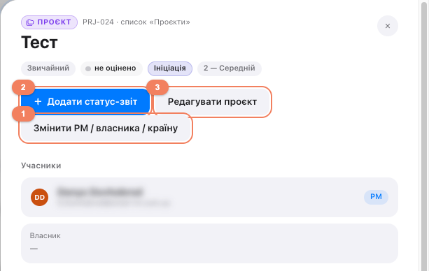<figcaption><ol class="legend"><li><b>1</b> «Змінити PM / власника / країну» — для PMO: країна, PM, власник.</li><li><b>2</b> «Додати статус-звіт» — для PM: бюджет, витрати, прогноз, дати, оцінки.</li><li><b>3</b> «Редагувати проєкт» — для PM: команда, посилання, опис, пріоритет.</li></ol></figcaption></figure>
      <figure class="shot">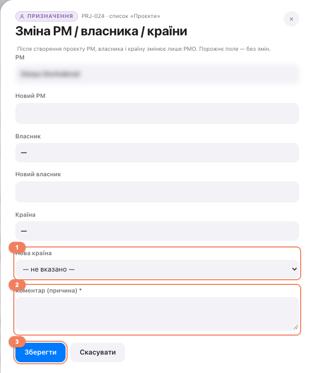<figcaption><ol class="legend"><li><b>1</b> «Нова країна» — оберіть країну зі списку.</li><li><b>2</b> «Коментар (причина)» — обов'язково, наприклад «Початкове внесення країни».</li><li><b>3</b> «Зберегти». Поля «Новий PM» і «Новий власник» лиште порожніми — вони не зміняться.</li></ol></figcaption></figure>
      <figure class="shot">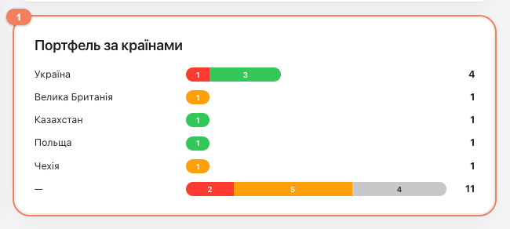<figcaption><ol class="legend"><li><b>1</b> «Портфель за країнами»: проєкти без країни — у рядку «—». Коли рядок зникне, країну вказано всім.</li></ol></figcaption></figure>
    </div></div>

    <div class="step"><div class="n">2</div><div>
      <h3>Погодьте або поверніть звіти, що вже чекають</h3>
      <p>Зараз на погодженні 3 звіти. Перевірте оцінку «Бюджет» за правилом нижче. «Не оцінено» допустиме лише у фазах «Ініціація» і «Планування».</p>
    </div></div>

    <div class="step"><div class="n">3</div><div>
      <h3>Скажіть PM, що команда тепер бачить проєкт</h3>
      <p>До 02.11 учасники «Команди проєкту» на порталі доступу до проєкту не мали. Тепер вони бачать проєкт і можуть коментувати. Попросіть PM перевірити склад команди (крок 1 для PM).</p>
    </div></div>

    <div class="step"><div class="n">4</div><div>
      <h3>Після звітів PM — перегляньте головну</h3>
      <p>«Потребують рішення» показує запит лише з останнього звіту проєкту. «Високі ризики та проблеми» — відкриті записи з оцінкою від 15, зокрема проблеми.</p>
    </div></div>
  </section>

  <section class="card">
    <h2>PM <span class="who">по кожному активному проєкту</span></h2>

    <div class="step"><div class="n">1</div><div>
      <h3>Перевірте команду проєкту</h3>
      <p>Картка → <span class="path">Редагувати проєкт</span> → «Команда проєкту». Учасники команди тепер бачать проєкт і коментують — приберіть зайвих, додайте тих, кого бракує, вкажіть роль. Зовнішню людину спершу додають у гості через запит у хелпдеск, потім шукайте її за повною адресою пошти.</p>
      <figure class="shot">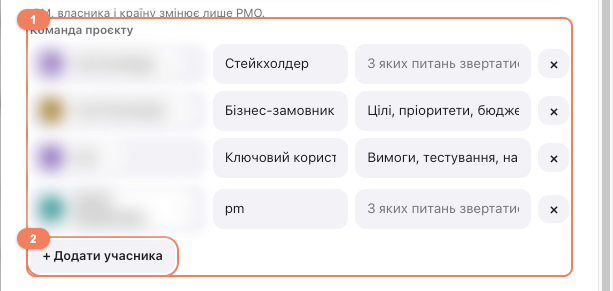<figcaption><ol class="legend"><li><b>1</b> Рядок учасника: людина (оберіть зі списку пошуку), роль — обов'язково, з яких питань звертатися. × — прибрати.</li><li><b>2</b> «+ Додати учасника» — новий рядок. Потім «Зберегти» внизу форми.</li></ol></figcaption></figure>
    </div></div>

    <div class="step"><div class="n">2</div><div>
      <h3>Подайте статус-звіт із ключовими показниками</h3>
      <p>Картка → <span class="path">Додати статус-звіт</span>. Обов'язково для 14 проєктів без жодного звіту, для решти — у найближчому звіті. Заповніть порожні показники:</p>
      <ul>
        <li><b>Витрати на дату</b> — усі витрати проєкту разом (зовнішні витрати й робота команди) з початку проєкту, наростаючим підсумком. Невідомо — лиште порожнім.</li>
        <li><b>Бюджет (план)</b> — погоджений бюджет проєкту.</li>
        <li><b>Прогноз витрат на завершення</b> — скільки проєкт коштуватиме до кінця. Підказка під полем рахує прогноз за темпом витрат. На ранній фазі, поки невідомо, — порожнім.</li>
        <li><b>Дата завершення (план)</b> і <b>Прогноз завершення</b>, якщо порожні.</li>
      </ul>
      <p>Зміна показників вимагає поля <b>«Причина зміни показників»</b>. Для першого внесення достатньо однієї фрази.</p>
      <div class="ex"><div class="yes"><b>Так</b>Початкове внесення бюджету, прогнозу витрат і дат у портал за погодженим планом проєкту.</div>
        <div class="no"><b>Не так</b>«Оновлено» — без пояснення, звідки цифри.</div></div>
      <figure class="shot">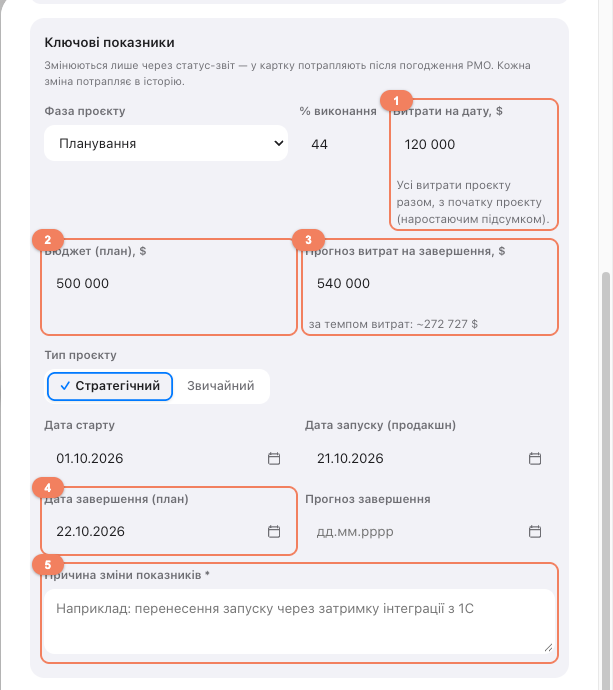<figcaption><ol class="legend"><li><b>1</b> «Витрати на дату» — усі витрати проєкту разом, з початку проєкту. Невідомо — порожньо.</li><li><b>2</b> «Бюджет (план)» — погоджений бюджет проєкту.</li><li><b>3</b> «Прогноз витрат на завершення» — ваша оцінка; під полем — підказка «за темпом витрат».</li><li><b>4</b> «Дата завершення (план)» і «Прогноз завершення», якщо порожні.</li><li><b>5</b> «Причина зміни показників» — з'являється, коли змінено бюджет, прогноз, фазу, тип чи дати; обов'язкова.</li></ol></figcaption></figure>
    </div></div>

    <div class="step"><div class="n">3</div><div>
      <h3>Оцініть бюджет за правилом PMO</h3>
      <p>Оцінка «Бюджет» — за прогнозом витрат відносно бюджету (план). Портал рахує відсоток сам і показує підказку під оцінкою.</p>
      <div class="rule">
        <div><b><span class="dot" style="background:var(--ok)"></span>Зелений</b>прогноз у межах бюджету</div>
        <div><b><span class="dot" style="background:var(--coral)"></span>Жовтий</b>перевищення до 9%</div>
        <div><b><span class="dot" style="background:var(--bad)"></span>Червоний</b>перевищення від 10%</div>
      </div>
      <p class="note">У фазах «Ініціація» і «Планування», поки бюджет ще не визначено, можна обрати «Не оцінено» — тоді загальний стан рахується з двох інших оцінок. З фази «Реалізація» оцінка обов'язкова.</p>
      <figure class="shot">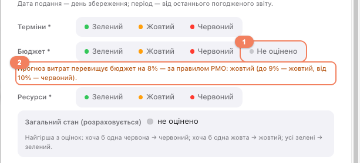<figcaption><ol class="legend"><li><b>1</b> «Не оцінено» — є лише у фазах «Ініціація» і «Планування».</li><li><b>2</b> Підказка за правилом PMO: на скільки прогноз перевищує бюджет і яка оцінка за правилом. Обрано зеленішу — з'явиться попередження.</li></ol></figcaption></figure>
    </div></div>

    <div class="step"><div class="n">4</div><div>
      <h3>Зроблено і не зроблено з плану</h3>
      <p>Якщо в попередньому погодженому звіті був план, поле <b>«Не зроблено з плану і чому»</b> обов'язкове. Усе виконали — позначте <span class="path">План виконано повністю</span>, писати «Усе виконано» вручну не треба.</p>
      <figure class="shot">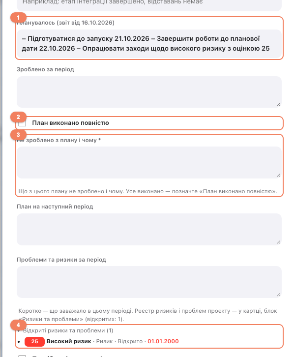<figcaption><ol class="legend"><li><b>1</b> «Планувалось» — план із попереднього погодженого звіту, тільки для читання.</li><li><b>2</b> «План виконано повністю» — позначте, якщо все з плану зроблено.</li><li><b>3</b> «Не зроблено з плану і чому» — обов'язково, якщо позначки немає.</li><li><b>4</b> «Відкриті ризики та проблеми» — список ризиків проєкту прямо у формі; розгорніть, щоб переглянути.</li></ol></figcaption></figure>
    </div></div>

    <div class="step"><div class="n">5</div><div>
      <h3>Перевірте ризики й проблеми</h3>
      <p>Відкриті ризики проєкту видно прямо у формі звіту, під «Проблеми та ризики за період». Прострочені терміни (зараз 3) — закрийте запис або зробіть <span class="path">Копіювати ризик</span> з новим терміном і закрийте старий. У нових записах власник обов'язковий; якщо відповідального ще немає — лишайте PM.</p>
      <figure class="shot">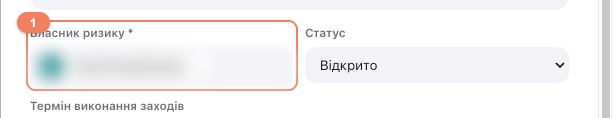<figcaption><ol class="legend"><li><b>1</b> «Власник ризику *» — обов'язково; за замовчуванням підставлено PM.</li></ol></figcaption></figure>
    </div></div>

    <div class="step"><div class="n">6</div><div>
      <h3>Завершені проєкти — в архів</h3>
      <p>Фаза <span class="path">Завершено — перенести в архів</span> (або «Скасовано…») і «Дата завершення (факт)». У «Витрати на дату» вкажіть фактичну суму на момент завершення — вона може бути меншою за план; прогноз дорівнюватиме факту.</p>
    </div></div>

    <div class="step"><div class="n">7</div><div>
      <h3>Перевірте погоджений звіт</h3>
      <p>Після погодження PMO відкрийте звіт: у ньому видно суми на дату звіту і план, з яким порівнювали результат. Ці ж значення потрапляють у картку.</p>
      <figure class="shot">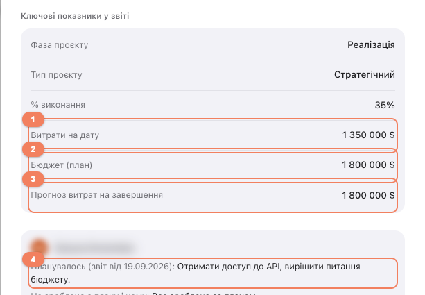<figcaption><ol class="legend"><li><b>1</b> «Витрати на дату» на дату звіту.</li><li><b>2</b> «Бюджет (план)».</li><li><b>3</b> «Прогноз витрат на завершення». Якщо звіт суму не змінював, показано попереднє значення.</li><li><b>4</b> «Планувалось (звіт від …)» — план попереднього звіту.</li></ol></figcaption></figure>
    </div></div>
  </section>

  <section class="card ceo">
    <h2>Країна (бізнес-юніт) і CEO країни</h2>
    <p>Бізнес-юніт у порталі — це <b>«Країна»</b> проєкту. Країни й CEO веде PMO в порталі: меню під аватаром → <span class="path">Країни і CEO</span>. Пункт бачать лише PMO і власники сайту.</p>
    <ul>
      <li><b>Країну проєкту</b> задає PMO: при створенні проєкту, а для поточних — через «Змінити PM / власника / країну» (див. розділ PMO). У виборі — активні країни довідника.</li>
      <li><b>CEO країни</b> бачить усі проєкти своєї країни і може їх коментувати. Сповіщень не отримує; проєкти в архіві — лише перегляд. Доступ з'являється протягом ~15 хвилин після збереження CEO або після того, як проєкту вказано країну.</li>
      <li><b>Змінити CEO</b>: відкрийте країну → «CEO країни» → знайдіть людину за ім'ям або повною адресою пошти (кілька людей — можна), × — прибрати → «Зберегти».</li>
      <li><b>Нова країна</b>: «+ Додати країну» → назва українською (обов'язково), англійською й російською (для інших мов інтерфейсу), CEO, порядок у списку → «Зберегти». Країна одразу з'являється у виборі для проєктів.</li>
      <li><b>Вимкнути країну</b>: зніміть «Активна». Її не буде у виборі для нових проєктів; наявні проєкти залишаються з нею, CEO зберігає доступ до них. Видаляти країни не можна.</li>
      <li><b>Назву наявної країни змінити не можна</b> — вона записана в проєктах. Щоб виправити: додайте нову країну, перепризначте проєкти («Змінити PM / власника / країну») і вимкніть стару.</li>
    </ul>
      <figure class="shot">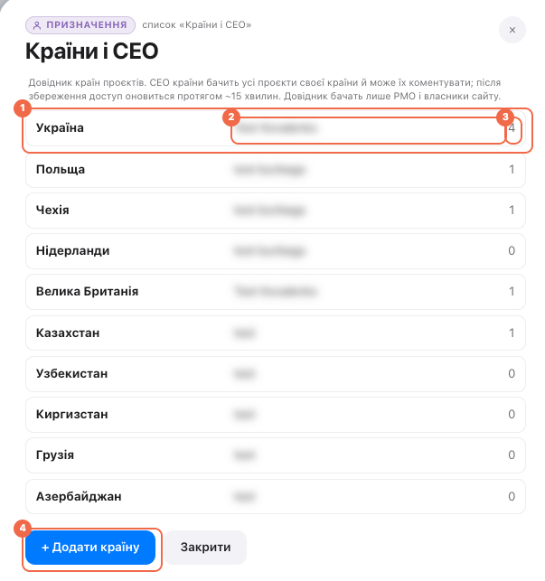<figcaption><ol class="legend"><li><b>1</b> Рядок країни — натисніть, щоб змінити CEO, переклади, порядок чи «Активна».</li><li><b>2</b> CEO країни (одна чи кілька людей); «CEO не призначено» — ніхто не отримує доступ як CEO.</li><li><b>3</b> Кількість активних проєктів країни.</li><li><b>4</b> «+ Додати країну».</li></ol></figcaption></figure>
      <figure class="shot">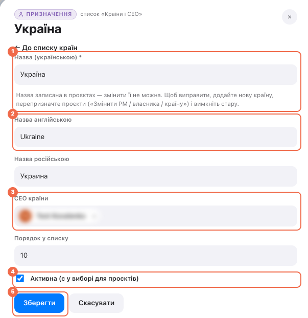<figcaption><ol class="legend"><li><b>1</b> Назва українською — у наявної країни лише для перегляду.</li><li><b>2</b> Назви англійською й російською — для інших мов інтерфейсу; порожньо — як українською.</li><li><b>3</b> «CEO країни» — пошук за ім'ям або повною адресою пошти; × — прибрати.</li><li><b>4</b> «Активна» — є у виборі для проєктів.</li><li><b>5</b> «Зберегти» — доступ CEO оновиться протягом ~15 хвилин.</li></ol></figcaption></figure>
  </section>

  <section class="card">
    <h2>Хто що оновлює</h2>
    <div class="tbl"><table>
      <thead><tr><th>Дані</th><th>Хто</th><th>Де</th><th>Коли в картці</th></tr></thead>
      <tbody>
        <tr><td>Країни і CEO країн</td><td>PMO</td><td>Меню під аватаром → Країни і CEO</td><td>одразу; доступ CEO — ~15 хв</td></tr>
        <tr><td>Країна</td><td>PMO</td><td>Змінити PM / власника / країну</td><td>~15 хв, з коментарем в історії</td></tr>
        <tr><td>Бюджет (план), прогноз витрат, витрати на дату</td><td>PM</td><td>Статус-звіт, з причиною</td><td>після погодження PMO</td></tr>
        <tr><td>Фаза, % виконання, дати</td><td>PM</td><td>Статус-звіт</td><td>після погодження PMO</td></tr>
        <tr><td>Команда, посилання, опис, пріоритет</td><td>PM</td><td>Редагувати проєкт</td><td>одразу; доступ команди — ~15 хв</td></tr>
        <tr><td>Ризики й проблеми</td><td>PM</td><td>Картка → Ризики та проблеми</td><td>одразу; в історії — ~15 хв</td></tr>
        <tr><td>PM і власник</td><td>PMO</td><td>Змінити PM / власника / країну</td><td>~15 хв</td></tr>
      </tbody>
    </table></div>
  </section>

  <section class="card">
    <h2>Часті питання</h2>
    <dl class="faq">
      <dt>Чому бюджет не можна змінити в «Редагувати проєкт»?</dt>
      <dd>Бюджет, витрати, прогноз, фаза й дати — ключові показники. Вони змінюються лише статус-звітом і після погодження PMO, щоб кожна зміна мала причину й запис в історії.</dd>
      <dt>Сума поки невідома — що писати?</dt>
      <dd>Нічого: лиште поле порожнім. Порожня сума не дорівнює «0 $» на екрані, а в розрахунках рахується як нуль.</dd>
      <dt>Подав звіт, а картка не змінилась.</dt>
      <dd>Картка оновлюється після погодження PMO і наступного запуску синхронізації (~15 хвилин). До того звіт видно з позначкою «на погодженні».</dd>
      <dt>Людина з команди пише, що не бачить проєкт.</dt>
      <dd>Перевірте, що її обрано зі списку пошуку, а не набрано текстом, і зачекайте ~15 хвилин. Зовнішню людину спершу мають додати в гості через хелпдеск.</dd>
      <dt>Детальніше про заповнення звіту?</dt>
      <dd>Пам'ятка «Як заповнювати статус-звіт» і «Довідка» в порталі — кнопка «?» угорі праворуч.</dd>
    </dl>
  </section>

</main>
